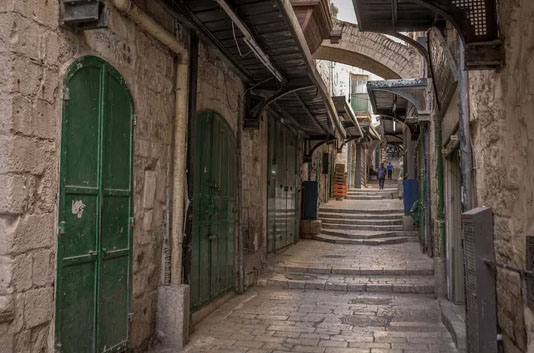
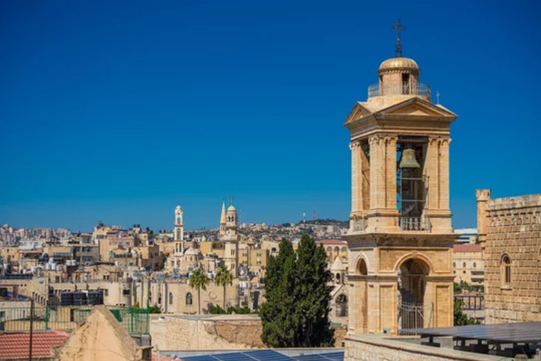

Palestine: Living Through History
The enduring spirit of a people navigating conflict, loss, and hope.
Iconic Landmarks
View all chevron_rightAl-Aqsa Mosque
One of Islam’s holiest sites, located in the historic compound of Jerusalem’s Old City.e
Church of the Nativity
Built over the traditional birthplace of Jesus, this ancient church is one of Christianity’s most revered sites.
Cities Shaped by History and Resilience
Ramallah
A vibrant cultural and administrative center of the West Bank, known for its lively cafés, arts scene, and political institutions.

Gaza City
A historic coastal city on the Mediterranean, long known as a crossroads of trade and culture in the region.

Bethlehem
A historic town revered as the birthplace of Jesus and home to one of Christianity’s most sacred sites.
The Palestinian Table
From the fragrant spice of Maqluba to the creamy sweetness of Knafeh, discover the rich flavors and enduring traditions of Palestinian cuisine.
Maqluba
A traditional rice dish layered with meat, vegetables, and fragrant spices, famously flipped upside down before serving.
Shorbat Adas
A comforting lentil soup flavored with cumin, lemon, and olive oil, widely enjoyed across Palestinian homes.
Mint Tea
A refreshing tea infused with fresh mint leaves, often shared as a symbol of hospitality and warmth.
Knafeh Nabulsiyeh
A famous Palestinian dessert from Nablus, made with soft white cheese, crisp shredded pastry, and fragrant sugar syrup.
Palestine:From Ancient Crossroads to the Present
パレスチナの歴史
古代
カナン人の都市国家 （紀元前3000年頃 - 紀元前1000年頃）
パレスチナ地域にはカナン人が住み、エリコやメギドなどの都市国家を築きました。
イスラエル王国とユダ王国（紀元前10世紀 - 紀元前6世紀）
ダビデ王とソロモン王の時代に繁栄したイスラエル王国が分裂し、北のイスラエル王国と南のユダ王国が成立しました。
アッシリア・バビロニア支配（紀元前8世紀 - 紀元前6世紀）
アッシリア帝国がイスラエル王国を滅ぼし、続いてバビロニアがユダ王国を征服しました。
アケメネス朝ペルシア（紀元前539年 - 紀元前332年）
ペルシャ帝国の支配下で、ユダヤ人がバビロン捕囚から解放されました。
中世
イスラム帝国（ウマイヤ朝・アッバース朝） （7世紀 - 11世紀）
イスラム教の拡大に伴い、パレスチナはイスラム帝国の一部となり、エルサレムは重要な宗教都市となりました。
十字軍国家（エルサレム王国） （1099年 - 1291年）
第1回十字軍によってエルサレム王国が建国されましたが、最終的にイスラム勢力に奪還されました。
アイユーブ朝とマムルーク朝（12世紀 - 16世紀）
サラーフッディーン（サラディン）によるエルサレム奪還後、マムルーク朝が支配を引き継ぎました。
近世
オスマン帝国 （1517年 - 1917年）
パレスチナはオスマン帝国の一部として統治され、農業や交易が発展しました。
近現代・現代
イギリス委任統治領（1920年 - 1948年）
第一次世界大戦後、国際連盟の委任統治のもとでイギリスが統治しました。
イスラエル建国とパレスチナ問題の発生（1948年 - 現在）
1948年にイスラエルが建国され、パレスチナ人の土地喪失と難民問題が発生しました。
パレスチナ自治政府の成立 （1994年 - 現在）
オスロ合意に基づき、パレスチナ自治政府が設立されました。
パレスチナ国 （1988年 - 現在）
1988年にパレスチナ解放機構（PLO）が独立を宣言し、現在も国際的な承認を求めています。一方で、イスラエルとの対立が続いています。 パレスチナの歴史は、宗教的・地政学的な要因が絡み合い、多くの勢力が交代で支配してきた複雑なものです。